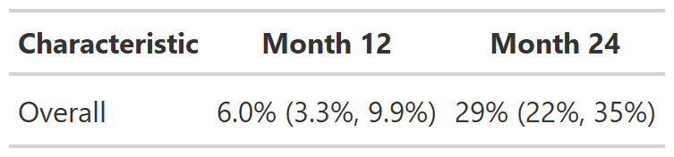
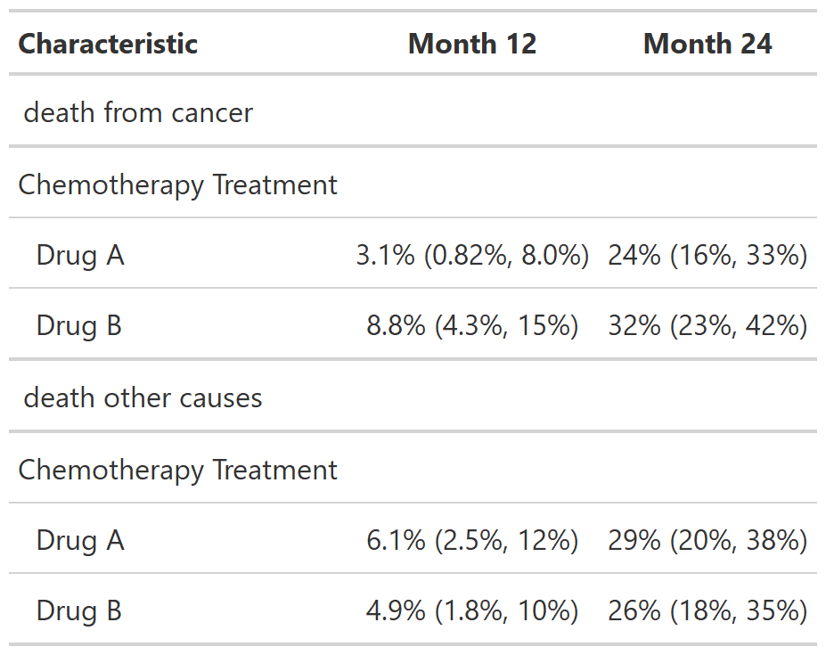

This is experimental and breaking changes may be made in a future release.
# S3 method for tidycuminc
tbl_cuminc(
x,
times = NULL,
outcomes = NULL,
statistic = "{estimate}% ({conf.low}%, {conf.high}%)",
label = NULL,
label_header = "**Time {time}**",
estimate_fun = NULL,
conf.level = x$conf.level,
missing = "—",
...
)
tbl_cuminc(x, ...)a 'tidycuminc' object created with cuminc()
Numeric vector of times to obtain risk estimates at
character vector of outcomes to include. Default is to include the first outcome.
string of statistic to report. Default is
"{estimate}% ({conf.low}%, {conf.high}%)"
string indicating the variable label
string for the header labels; uses glue syntax.
Default is "**Time {time}**"
function that styles and formats the statistics.
Default is ~gtsummary::style_sigfig(.x, scale = 100)
Level of the confidence interval. Default matches that in
cuminc(conf.level=) (typically, 0.95)
string to replace missing values with. Default is an
em-dash, "\U2014"
not used
Example 1

Example 2

Other tbl_cuminc tools:
add_cuminc
# Example 1 ----------------------------------
tbl_cuminc_ex1 <-
cuminc(Surv(ttdeath, death_cr) ~ 1, trial) %>%
tbl_cuminc(times = c(12, 24), label_header = "**Month {time}**")
# Example 2 ----------------------------------
tbl_cuminc_ex2 <-
cuminc(Surv(ttdeath, death_cr) ~ trt, trial) %>%
tbl_cuminc(times = c(12, 24),
outcomes = c("death from cancer", "death other causes"),
label_header = "**Month {time}**")